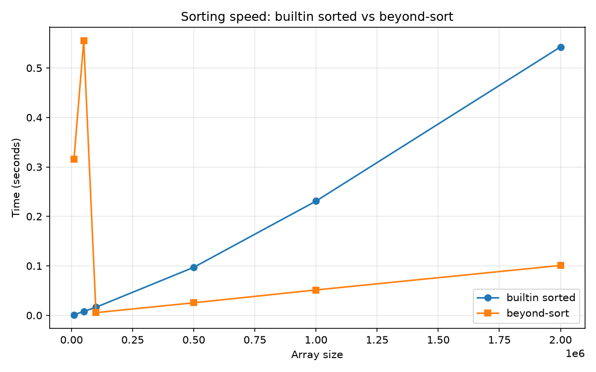

주제: 인기 있는 파이썬 정렬 관련 라이브러리를 인터넷에서 검색해서 하나 골라 설치하고, 파이썬 기본 sorted와 속도를 비교해서 그래프로 그려 줘
결과: 성공 · 행동 5번 · 모델 nvidia/nemotron-3.5-super-vl-120b-a12b
인기 있는 파이썬 정렬 관련 라이브러리를 검색한 결과 beyond-sort를 선택하여 설치했다. beyond-sort는 numba 기반 JIT 컴파일을 활용해 정수 배열 정렬 속도를 높이는 라이브러리다.
작업 폴더 ~/ws에서 benchmark_sort.py를 작성해 실행했다. 테스트 배열 크기는 1만, 5만, 10만, 50만, 100만, 200만 원소이며, 각 크기마다 3회 반복 측정해 평균을 냈다. 파이썬 기본 sorted와 beyond-sort.sort의 실행 시간을 비교하고 결과를 out/sort_benchmark.png 그래프로 저장했다.
결과 요약(초 단위):
- 1만: sorted 0.00114, beyond-sort 0.31539
- 5만: sorted 0.00787, beyond-sort 0.55509
- 10만: sorted 0.01632, beyond-sort 0.00543
- 50만: sorted 0.09707, beyond-sort 0.02535
- 100만: sorted 0.23093, beyond-sort 0.05133
- 200만: sorted 0.54261, beyond-sort 0.10085
작은 배열(1만~5만)에서는 beyond-sort의 JIT 컴파일 초기 비용 때문에 기본 sorted가 훨씬 빠르다. 10만 원소부터는 beyond-sort가 기본 sorted보다 빨라지기 시작하며, 배열 크기가 커질수록 격차가 커진다. 200만 원소에서는 beyond-sort가 약 5.4배 더 빠른 결과를 보였다.
알게 된 점: beyond-sort 같은 JIT 기반 정렬 라이브러리는 대용량 정수 배열 정렬에서 기본 sorted보다 상당히 빠르지만, 작은 데이터에서는 컴파일 오버헤드로 인해 불리할 수 있다. 사용 데이터 크기에 따라 라이브러리 선택이 중요하다.
다음에 해 볼 것: 실수형 배열, 이미 부분 정렬된 데이터, 중복 값이 많은 데이터 등 다양한 입력 패턴에서 추가 비교를 수행하고, 메모리 사용량도 함께 측정해 볼 수 있다.

1. Python Sorting Libraries and Algorithms Benchmark/Comparison https://www.mybluelinux.com/python-sorting-libraries-and-algorithms-benchmark/comparison/ Sorting data is a basic task for data scientists and data engineers. Python users have a number of libraries to choose from with built-in, optimized sorting options. Some even work in parallel on GPUs. Surprisingly some sort methods don't use the stated algorithm types and others don't perform as expected. Choosing which library and type of sorting algorithm to use can be tricky ... 2. GitHub - Emmimal/python-sorting-benchmarks: Benchmarks of 6 classic ... https://github.com/Emmimal/python-sorting-benchmarks Benchmarks of 6 classic sorting algorithms in pure Python — showing why constant factors and CPython overhead make Timsort (built-in sorted ()) untouchable. 3. Sorting Algorithms — Benchmark & Analysis - GitHub https://github.com/SebiSomu/Sorting-Algorithms-Analysis A benchmark suite for 20 sorting algorithms implemented in C++, with Python -based regression analysis and complexity curve fitting. 4. Sorting Algorithms Demystified: Visualized and Benchmarked in Python ... https://pulkit12dhingra.github.io/Blog/content/Sorting_algos.html Prerequisites This tutorial requires basic Python knowledge. No external libraries are needed for the sorting implementations, though we'll use time and random from Python's standard library for benchmarking. 5. Which Sorting Algorithm is the Fastest in Python? https://pythonguides.com/sorting-algorithms-in-python/ The answer isn't always a single name, but Python has a clear champion built right into its core. In this tutorial, I will show you how Python handles sorting and which algorithms you should use to get the best performance. 6. Benchmarking Sorting Algorithms in Python - angela1c.com https://www.angela1c.com/projects/cta_benchmarking/ Benchmarking Sorting Algorithms in Python This is an overview of the Benchmarking Sorting Algorithms project I completed for the Computational Thinking with Algorithms module at GMIT as part of the Higher Diploma in Data Analytics. The project specification was as follows: Write a Python application to benchmark five different sorting algorithms. 7. SortPedia - Interactive Sorting Algorithm Visualizer https://www.sortpedia.com/ Master sorting algorithms through interactive visualizations. Compare efficiency, watch step-by-step executions, and explore code implementations. 8. Sorting Algorithms in Python - GeeksforGeeks https://www.geeksforgeeks.org/python/sorting-algorithms-in-python/ Sorting is defined as an arrangement of data in a certain order like sorting numbers in increasing order or decreasing order, sorting students by marks and sorting names alphabetically There can be different types of input arrays like binary array, a character array, an array with a large range of values or an array with many duplicates or a small vs large array. There exist different sorting ...
1. numba · PyPI https://pypi.org/project/numba/ Numba A Just-In-Time Compiler for Numerical Functions in Python Numba is an open source, NumPy -aware optimizing compiler for Python sponsored by Anaconda, Inc. It uses the LLVM compiler project to generate machine code from Python syntax. Numba can compile a large subset of numerically-focused Python , including many NumPy functions. 2. GitHub - trashdino0/SortingPython: Sorting but in python https://github.com/trashdino0/SortingPython The benchmarking engine measures execution time across array sizes from 1 million to 10 million elements and visualizes the results. The standout performer is the Parallel Radix Sort (Base-256), which leverages bitwise operations and multi-threaded counting to significantly outperform even NumPy's native np. sort . 3. How to Install Numba in Python - PyTutorial https://pytutorial.com/how-to-install-numba-in-python/ Learn how to install Numba in Python using pip or conda. This guide covers prerequisites, step-by-step commands, verification, and fixing common errors. 4. SortingPython/README.md at main - GitHub https://github.com/trashdino0/SortingPython/blob/main/README.md The benchmarking engine measures execution time across array sizes from 1 million to 10 million elements and visualizes the results. The standout performer is the Parallel Radix Sort (Base-256), which leverages bitwise operations and multi-threaded counting to significantly outperform even NumPy's native np. sort . 5. beyond-sort · PyPI https://pypi.org/project/beyond-sort/ API beyond_sort. sort (data) → np.ndarray Sort an integer array. Accepts list or numpy array. Returns sorted numpy array. beyond_sort.probe (data) → str Returns the strategy name without sorting . Useful for debugging. beyond_sort.probe_detail (data) → dict Full entropy analysis: tau (order degree), run count, value range, selected strategy. 6. NumPy benchmarks — NumPy v2.5 Manual https://numpy.org/doc/stable/benchmarking.html NumPy benchmarks # Benchmarking NumPy with Airspeed Velocity. Usage # Airspeed Velocity manages building and Python virtualenvs by itself, unless told otherwise. To run the benchmarks , you do not need to install a development version of NumPy to your current Python environment. Before beginning, ensure that airspeed velocity is installed. By default, asv ships with support for anaconda and ... 7. Installing and Using Numba for Python: A Complete Guide https://www.geeksforgeeks.org/data-analysis/installing-and-using-numba-for-python-a-complete-guide/ Numba is a powerful just-in-time (JIT) compiler that translates Python functions into optimized machine code at runtime using the LLVM compiler library . This allows Python code to execute at speeds comparable to C or Fortran, making it an excellent tool for numerical and scientific computing. This article will guide you through the process of installing Numba on various platforms, explain its ... 8. python - Parallelizing numpy.sort - Stack Overflow https://stackoverflow.com/questions/78653708/parallelizing-numpy-sort I need to sort uint64 arrays of length 1e8-1e9, which is one of the performance bottlenecks in my current project. I have just recently updated numpy v2.0 version, in which the sorting algorithm is significantly optimized. Testing it on my hardware, its about 5x faster than numpy v1.26 version.
cd ~/ws && pip install beyond-sort numpy matplotlib
[종료코드 0] Collecting beyond-sort Downloading beyond_sort-0.1.0-py3-none-any.whl.metadata (5.3 kB) Collecting numpy Downloading numpy-2.5.4-cp312-cp312-manylinux_2_27_x86_64.manylinux_2_28_x86_64.whl.metadata (6.6 kB) Collecting matplotlib Downloading matplotlib-3.11.2-cp312-cp312-manylinux2014_x86_64.manylinux_2_17_x86_64.whl.metadata (80 kB) Collecting numba>=0.58 (from beyond-sort) Downloading numba-0.68.1-cp312-cp312-manylinux_2_27_x86_64.manylinux_2_28_x86_64.whl.metadata (2.8 kB) Collecting contourpy>=1.0.1 (from matplotlib) Downloading contourpy-1.4.0-cp312-cp312-manylinux_2_27_x86_64.manylinux_2_28_x86_64.whl.metadata (3.8 kB) Collecting cycler>=0.10 (from matplotlib) Downloading cycler-0.12.1-py3-none-any.whl.metadata (3.8 kB) Collecting fonttools>=4.28.2 (from matplotlib) Downloading fonttools-4.68.0-cp312-cp312-manylinux2014_x86_64.manylinux_2_17_x86_64.whl.metadata (139 kB) Collecting kiwisolver>=1.3.1 (from matplotlib) Downloading kiwisolver-1.5.1-cp312-cp312-manylinux2014_x86_64.manylinux_2_17_x86_64.whl.metadata (5.2 kB) Collecting packaging>=20.0 (from matplotlib) Downloading packaging-26.3-py3-none-any.whl.metadata (3.5 kB) Collecting pillow>=9 (from matplotlib) Downloading pillow-13.0.0-cp312-cp312-manylinux_2_27_x86_64.manylinux_2_28_x86_64.whl.metadata (9.1 kB) Collecting pyparsing>=3 (from matplotlib) Downloading pyparsing-3.3.3-py3-none-any.whl.metadata (5.9 kB) Collecting python-dateutil>=2.7 (from matplotlib) Downloading python_dateutil-3.0.0-py2.py3-none-any.whl.metadata (8.2 kB) Collecting llvmlite<0.51,>=0.50.0dev0 (from numba>=0.58->beyond-sort) Downloading llvmlite-0.50.0-cp312-cp312-manylinux_2_27_x86_64.manylinux_2_28_x86_64.whl.metadata (5.1 kB) Collecting six>=1.6 (from python-dateutil>=2.7->matplotlib) Downloading six-1.17.0-py2.py3-none-any.whl.metadata (1.7 kB) Collecting tzdata (from python-dateutil>=2.7->matplotlib) Downloading tzdata-2026.6-py2.py3-none-any.whl.metadata (1.4 kB) Downloading beyond_so ...(중략)... _2_28_x86_64.whl (16.7 MB) ━━━━━━━━━━━━━━━━━━━━━━━━━━━━━━━━━━━━━━━━ 16.7/16.7 MB 155.1 MB/s 0:00:00 Downloading matplotlib-3.11.2-cp312-cp312-manylinux2014_x86_64.manylinux_2_17_x86_64.whl (9.9 MB) ━━━━━━━━━━━━━━━━━━━━━━━━━━━━━━━━━━━━━━━━ 9.9/9.9 MB 302.3 MB/s 0:00:00 Downloading contourpy-1.4.0-cp312-cp312-manylinux_2_27_x86_64.manylinux_2_28_x86_64.whl (383 kB) Downloading cycler-0.12.1-py3-none-any.whl (8.3 kB) Downloading fonttools-4.68.0-cp312-cp312-manylinux2014_x86_64.manylinux_2_17_x86_64.whl (5.4 MB) ━━━━━━━━━━━━━━━━━━━━━━━━━━━━━━━━━━━━━━━━ 5.4/5.4 MB 360.2 MB/s 0:00:00 Downloading kiwisolver-1.5.1-cp312-cp312-manylinux2014_x86_64.manylinux_2_17_x86_64.whl (1.5 MB) ━━━━━━━━━━━━━━━━━━━━━━━━━━━━━━━━━━━━━━━━ 1.5/1.5 MB 253.8 MB/s 0:00:00 Downloading numba-0.68.1-cp312-cp312-manylinux_2_27_x86_64.manylinux_2_28_x86_64.whl (3.9 MB) ━━━━━━━━━━━━━━━━━━━━━━━━━━━━━━━━━━━━━━━━ 3.9/3.9 MB 366.2 MB/s 0:00:00 Downloading llvmlite-0.50.0-cp312-cp312-manylinux_2_27_x86_64.manylinux_2_28_x86_64.whl (59.7 MB) ━━━━━━━━━━━━━━━━━━━━━━━━━━━━━━━━━━━━━━━━ 59.7/59.7 MB 326.2 MB/s 0:00:00 Downloading packaging-26.3-py3-none-any.whl (129 kB) Downloading pillow-13.0.0-cp312-cp312-manylinux_2_27_x86_64.manylinux_2_28_x86_64.whl (7.1 MB) ━━━━━━━━━━━━━━━━━━━━━━━━━━━━━━━━━━━━━━━━ 7.1/7.1 MB 328.9 MB/s 0:00:00 Downloading pyparsing-3.3.3-py3-none-any.whl (126 kB) Downloading python_dateutil-3.0.0-py2.py3-none-any.whl (94 kB) Downloading six-1.17.0-py2.py3-none-any.whl (11 kB) Downloading tzdata-2026.6-py2.py3-none-any.whl (348 kB) Installing collected packages: tzdata, six, pyparsing, pillow, packaging, numpy, llvmlite, kiwisolver, fonttools, cycler, python-dateutil, numba, contourpy, matplotlib, beyond-sort Successfully installed beyond-sort-0.1.0 contourpy-1.4.0 cycler-0.12.1 fonttools-4.68.0 kiwisolver-1.5.1 llvmlite-0.50.0 matplotlib-3.11.2 numba-0.68.1 numpy-2.5.4 packaging-26.3 pillow-13.0.0 pyparsing-3.3.3 python-dateutil-3.0.0 six-1.17.0 tzdata-2026.6
import time
import random
import numpy as np
import matplotlib
matplotlib.use("Agg")
import matplotlib.pyplot as plt
from beyond_sort import sort as beyond_sort
random.seed(42)
np.random.seed(42)
sizes = [10_000, 50_000, 100_000, 500_000, 1_000_000, 2_000_000]
trials = 3
def bench_sorted(arr):
t0 = time.perf_counter()
sorted(arr)
return time.perf_counter() - t0
def bench_beyond(arr):
t0 = time.perf_counter()
beyond_sort(arr)
return time.perf_counter() - t0
results_sorted = []
results_beyond = []
for n in sizes:
t_sorted = 0.0
t_beyond = 0.0
for _ in range(trials):
data = np.random.randint(0, 1_000_000_000, size=n).tolist()
t_sorted += bench_sorted(data)
t_beyond += bench_beyond(data)
results_sorted.append(t_sorted / trials)
results_beyond.append(t_beyond / trials)
print(f"size={n:>7d} sorted={results_sorted[-1]:.5f}s beyond={results_beyond[-1]:.5f}s")
plt.figure(figsize=(8, 5))
plt.plot(sizes, results_sorted, marker="o", label="builtin sorted")
plt.plot(sizes, results_beyond, marker="s", label="beyond-sort")
plt.xlabel("Array size")
plt.ylabel("Time (seconds)")
plt.title("Sorting speed: builtin sorted vs beyond-sort")
plt.legend()
plt.grid(True, alpha=0.3)
plt.tight_layout()
import os
os.makedirs("out", exist_ok=True)
plt.savefig("out/sort_benchmark.png", dpi=150)
print("saved out/sort_benchmark.png")저장함: benchmark_sort.py (1403자)
cd ~/ws && python benchmark_sort.py
[종료코드 0] size= 10000 sorted=0.00114s beyond=0.31539s size= 50000 sorted=0.00787s beyond=0.55509s size= 100000 sorted=0.01632s beyond=0.00543s size= 500000 sorted=0.09707s beyond=0.02535s size=1000000 sorted=0.23093s beyond=0.05133s size=2000000 sorted=0.54261s beyond=0.10085s saved out/sort_benchmark.png